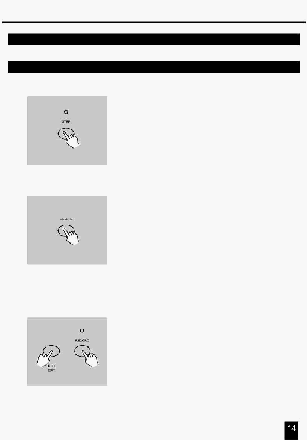

2. Опис інструкцій
2.2 Редагування
2.2.5 Видалення Кроку або Кроків
1.
Увійдіть у режим Редагування.
2. Натисніть кнопку Step (Крок) для
прокручування послідовності Кроків до Кроку,
що Ви хочете видалити.
3.
Натисніть кнопку Delete при досягненні Кроку,
що Ви хочете видалити, всі індикатори
мигнуть, указуючи , що Крок вилучений.
4.
Продовжіть виконувати пункти 2 й 3 доти,
поки не будуть вилучені всі небажані Кроки.
5.
Натисніть кнопку Rec Exit , попередньо
натиснувши й утримуючи кнопку Record
(Запису), індикатор Scene згасне, указуючи
на вихід з режиму Редагування.